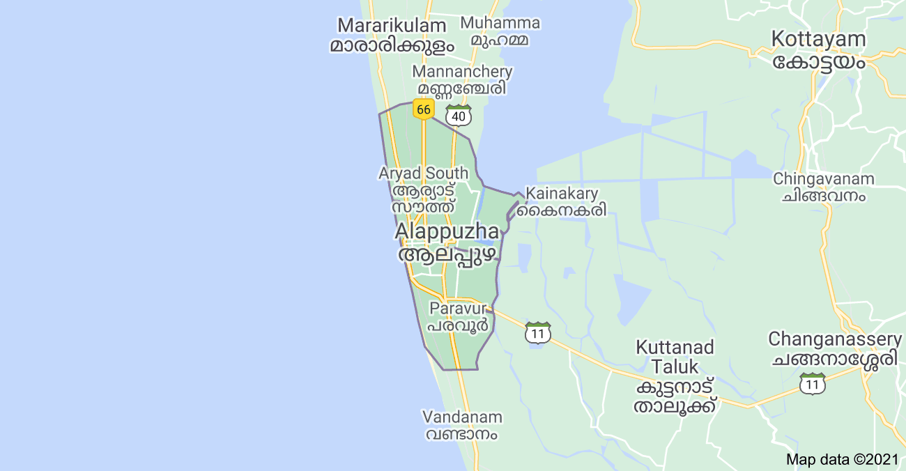

About Alappuzha:-
Referred to as the Venice of the East, Alappuzha has always enjoyed an important place in the maritime history of Kerala. Today, it is famous for its boat races, backwater holidays, beaches, marine products and coir industry. Alappuzha Beach is a popular picnic spot. The pier, which extends out to the sea here, is over 137 years old. Entertainment facilities at the Vijaya Beach Park add to the attraction of the beach. There is also an old lighthouse nearby which greatly intrigues all visitors. Another delightful experience while in Alappuzha is the houseboat cruise. The houseboats you find in the backwaters of Alappuzha are in fact a reworked version of the Kettuvallams of olden times. Kettuvallam is a Malayalam word, ‘Kettu’, refers to dwelling structures and ‘Vallom’ means boat. In the olden days, kettuvallam or boat with thatched roof that covers over wooden hulls was used to carry tons of rice and spices. Of late, houseboats come equipped with all the comforts of a good hotel room including furnished bedrooms, modern toilets, cozy living rooms, a kitchen and even a balcony for angling. An uninterrupted view of life in the backwaters can be enjoyed while staying in a houseboat.
Krishnapuram Palace
The Krishnapuram Palace is a palace and museum that is located in Kayamkulam, at a distance of 47 km from Alappuzha. This magnificent palace was built during the reign of a Travancore King, Anizham Thirunal Marthanda Varma and is well known for its mural paintings and architecture. The palace is built in the traditional architectural style of Kerala, with a gabled roof, narrow corridors and dormer windows, and is close to the Krishnaswamy Temple at Krishnapuram. A major attraction of this place is that it houses is one of the biggest mural paintings that can be found in all of Kerala. Known as the 'Gajendra Moksha', this mural painting covers an area of around 53 square feet and has a rich historical value attached to it. The double-edged sword Kayamkulam Vaal can also be found here. The Krishnapuram Palace is currently maintained by the Archaeological Department of Kerala and contains a variety of exhibits that once belonged to the Palace and its former occupant.


Pathiramanal island
Pathiramanal is a bird watcher’s paradise. It is about 1.5 km from Muhamma Boat Jetty and about 13 km from Alappuzha. This small island on the backwaters is a safe haven for hundreds of rare migrating birds. A 1.5 hour motor boat ride or a 30 minute speedboat trip from Alappuzha gets you here. Surrounded by the Vembanad Lake, stretching from Alappuzha to Kochi and the Kayamkulam Lake, Pathiramanal is accessible only by boat. It is an ideal pit stop in the middle of a houseboat ride. The name 'Pathiramanal' means 'Sands of Night'. Estimates say that the area has 91 local species of birds and 50 migratory birds. One can see Pintail Ducks, Common Teal, Night Heron, Cormorant, Darter, Indian Shag, Purple Heron, Cattle Egret, Indian Pond Heron, Little Egret, Bronze-winged Jacanas, Stork-billed Kingfisher, Whistling Duck, Cotton Pygmy-Goose, Little Cormorant and Whiskered Tern. Avid bird watchers will indeed find few other places that rival Pathiramanal.